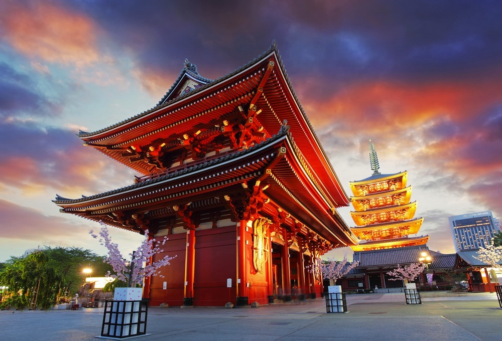
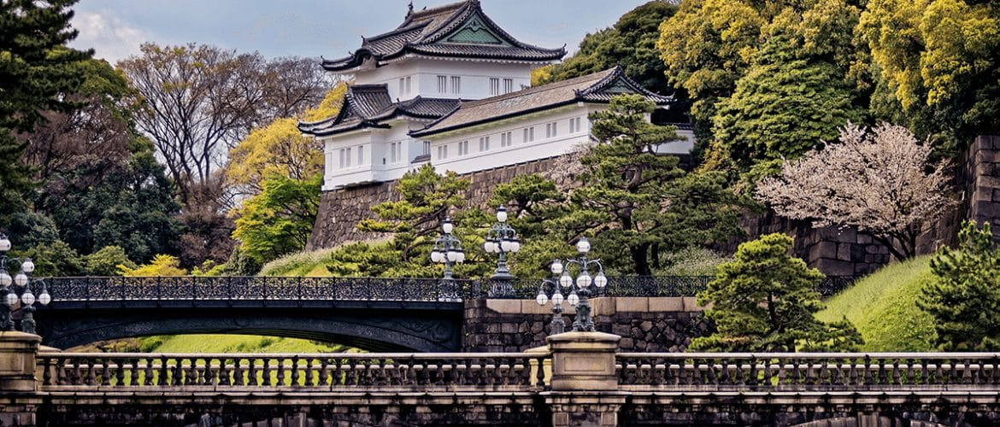
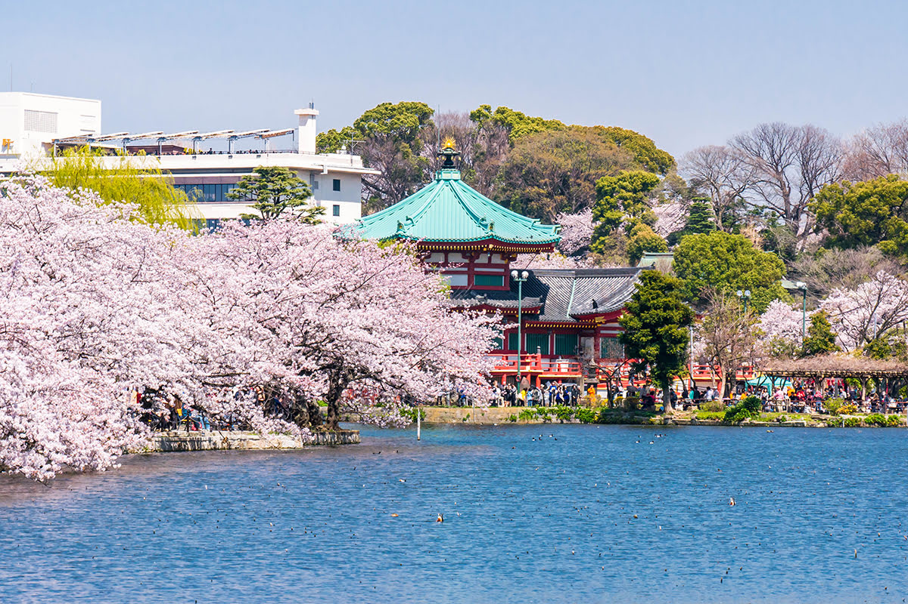

Shibuya Crossing
El cruce peatonal más famoso del mundo.

El cruce peatonal más famoso del mundo.
El más antiguo de Tokio.
Rodeado por un bosque impresionante.

Jardines y arquitectura imperial.
Zoológico, museos, y en primavera: sakuras.
| Concepto | Costo estimado en USD |
| Vuelo redondo | $900–$1,400 |
| Hospedaje 7 noches | $700–$1,000 |
| Alimentación | $200–$300 |
| Transporte | $100–$150 |
| Entradas y tours | $100–$200 |
| Total estimado | $2,000–$3,000 |